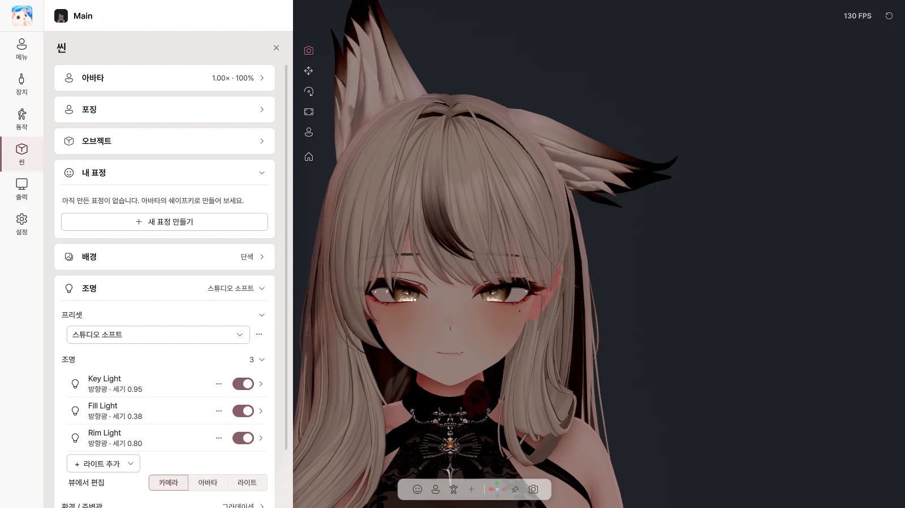

8. 씬#
씬 페이지에서 배경·조명·효과를 정합니다. 포징·오브젝트·내 표정은 11장을 보세요.

아바타#
| 항목 | 하는 일 |
|---|---|
| 밝기 | 아바타 전체 밝기 |
| 크기 | 아바타 크기 |
| 가운데로 | 아바타를 가운데로 |
배경#
| 선택 | 쓰는 곳 |
|---|---|
| 단색 | 원하는 색 배경 |
| 초록 / 파랑 | 크로마키 (OBS 크로마 키 필터) |
| 투명 | Spout2로 투명 배경 보내기 (창에서는 검게 보임) |
| 이미지 | PNG / JPG 그림 배경 |
조명#
프리셋#
| 프리셋 | 느낌 |
|---|---|
| 스팟 라이트 | 얼굴을 비추는 무대 조명 (기본) |
| 카메라 라이트 | 카메라 쪽에서 비추는 단순한 조명 |
| 스튜디오 소프트 / 스튜디오 브라이트 | 부드러운 / 밝은 스튜디오 조명 |
| 얼굴 강조 | 얼굴에 집중 |
| 플랫 VTuber | 그림자 없이 평평하게 |
| 웜 톤 / 쿨 톤 | 따뜻한 / 차가운 색 |
| 드라마틱 | 강한 측면 조명 |
| 씬 조명 | 아바타를 내보낸 Unity 씬의 조명 |
⋯ 메뉴: 새 프리셋으로 저장 · 이름 변경 · 현재 조명으로 업데이트 · 복제 · 삭제 · 조명 초기화
라이트#
| 항목 | 하는 일 |
|---|---|
| 라이트 스위치 | 켜기 / 끄기 |
| 세기 · 색상 · 색온도 | 밝기와 색 |
| 위치 · 방향 · 대상 | 어디서 어디를 비출지 |
| 그림자 · 범위 | 그림자, 빛이 닿는 범위 |
| + 라이트 추가 | 얼굴 라이트 · 보조광 · 림 라이트 · 방향광 · 점광 · 스폿 |
| 뷰에서 편집 | 뷰에서 라이트를 직접 옮기기 |
환경 / 주변광#
사방에서 오는 빛의 밝기와 색을 정합니다: 씬 하늘 / 그라데이션 / 단색
효과#
| 효과 | 하는 일 |
|---|---|
| 포스트 프로세싱 | 효과 전체 켜기 / 끄기 |
| 안티에일리어싱 | 가장자리 계단 줄이기 |
| 블룸 | 빛 번짐 |
| 색 보정 | 노출·대비·채도·색온도 |
| 비네트 | 가장자리 어둡게 |
| 필름 그레인 | 필름 질감 |
| 색수차 | 가장자리 색 번짐 |
| 피사계 심도 | 배경 흐림 (얼굴에 자동 초점) |
| 모션 블러 | 움직임 잔상 |
셰이더#
아바타에 쓴 셰이더를 그대로 씁니다. Poiyomi, lilToon 등 주요 셰이더에서 확인했습니다. AudioLink, 미러·카메라 감지, Light Volumes는 동작하지 않습니다.